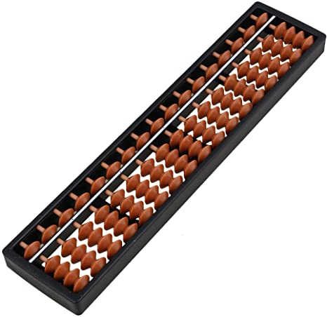
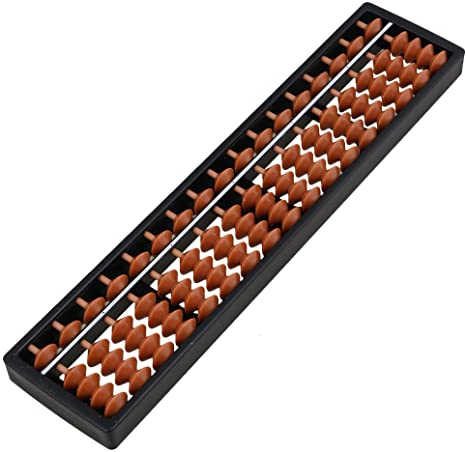

About Abacus
Hello! In this page, I will talk about how I started abacus and how I pursued further into it.
When I was in grade 1, my mom started making me go to abacus. Abacus is a
plastic or wooden mathematical tool developed by Europeans and Asians.
I took the lessons for a few years, but I hadn't developed an interest for math yet,
so I didn't really have an interest in abacus as well. In grade 3, I quit.
In grade 5 though, I started having a passion for math, so I asked my mom to
apply for the lessons again. I participated in a local competition every year,
but my first global competition was on December 2018, when I was grade 7.
I have never explored southeast Asia, and this was a great experience for me.
The competition was in Malaysia, but my mom and I had time for exploring the
capital city, Kuala Lumpur. My 2nd competition was also in southeast Asia,
Thailand. The competition was in a small city, but we stayed in the capital city,
Bangkok, for a while. Abacus helped my brain with memorization, and
I am grateful for the experiences I gained from taking
abacus and striving for my passions.
For Piano, I will be talking about how I started piano.
When I was around 4 years old, I started playing piano, because my mom
loved listening to the piano, she wanted to play for her when I grew up.
I am currently almost finished level 10. Although this may seem very low a
level for how long I've been playing for, in my opinion 10 years would be right
for 10 levels, since taking your time to finish the whole repetoire, in my opinion,
gives the most value, as experience is worth the most, not levels. Besides,
I have gotten a skill along the way, which I might not have gotten if I
didn't spend as much time on piano, which is perfect pitch. This helps me
a lot when memorizing and sight-reading music.
 
Back to the Top

Back to the Top